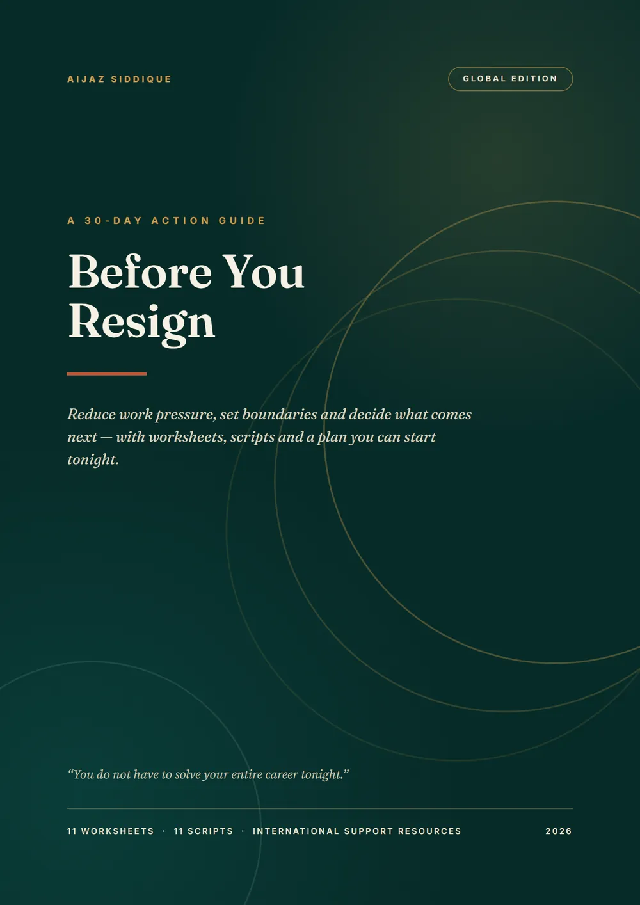
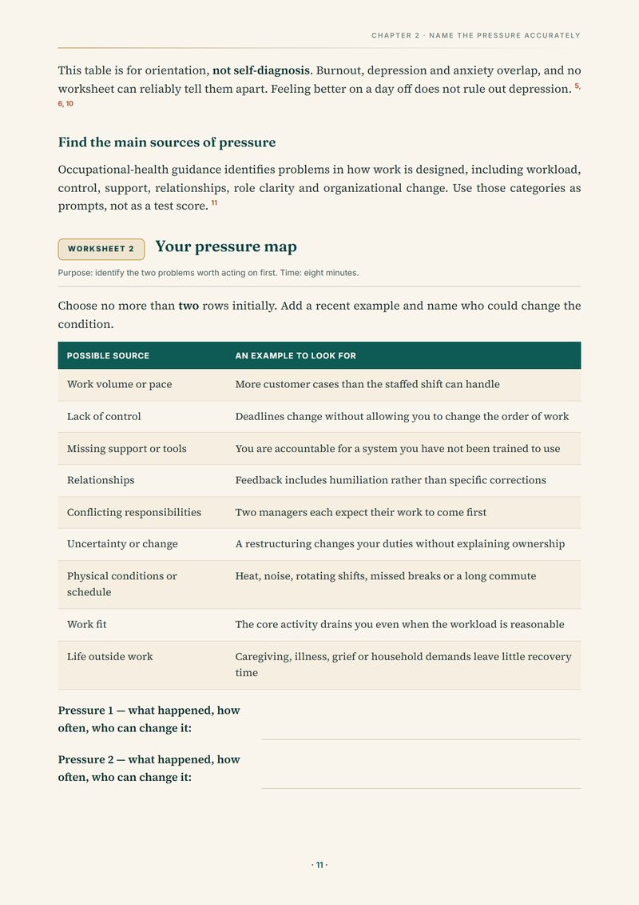
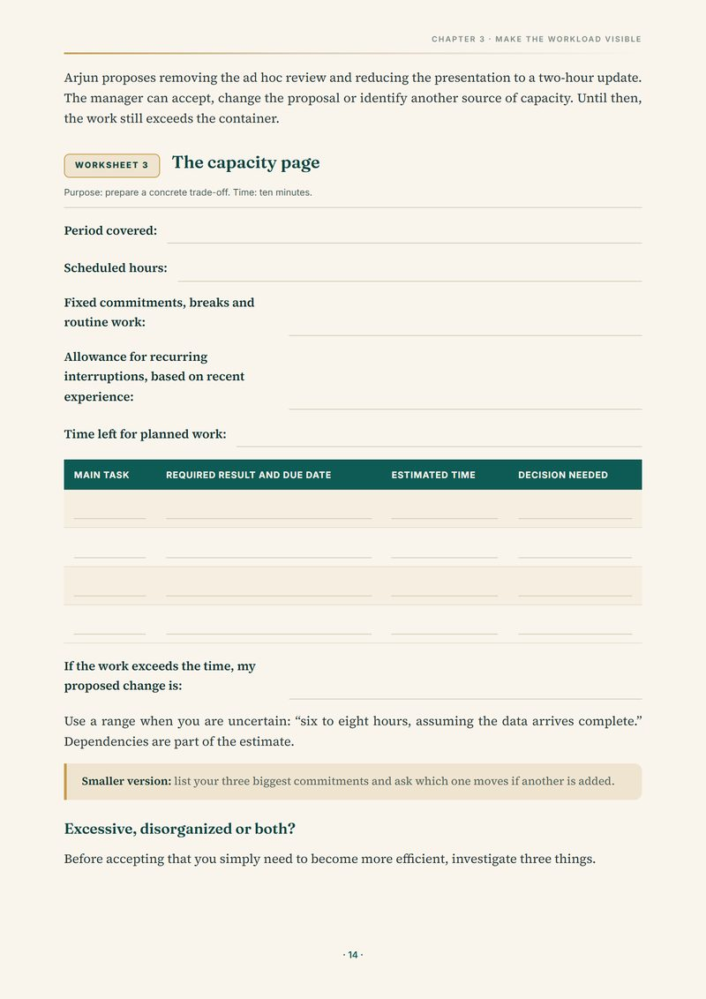
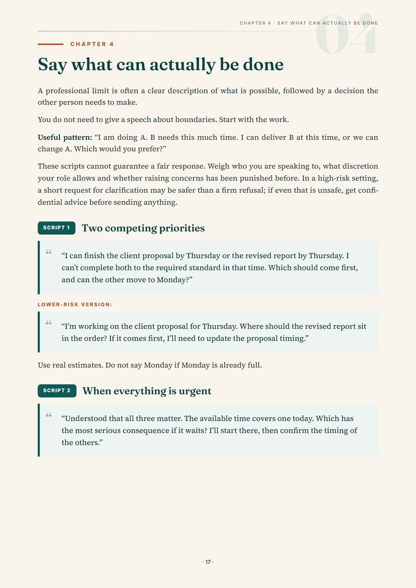
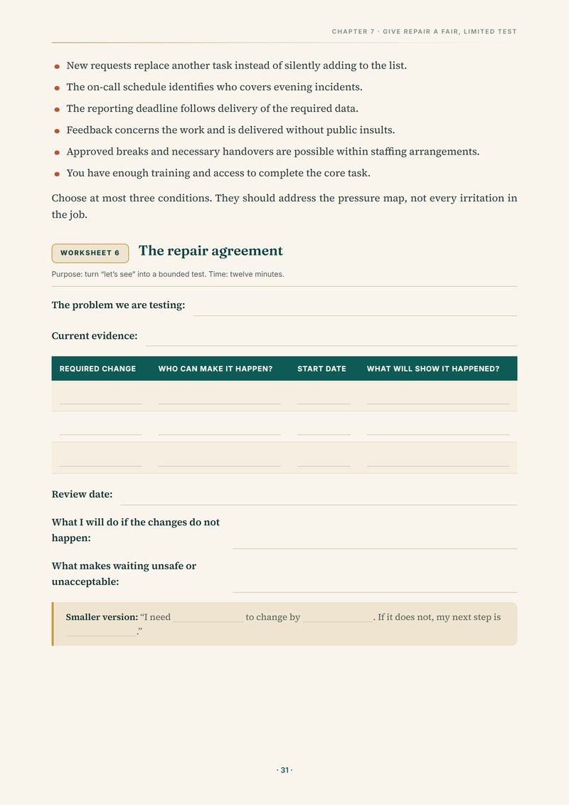
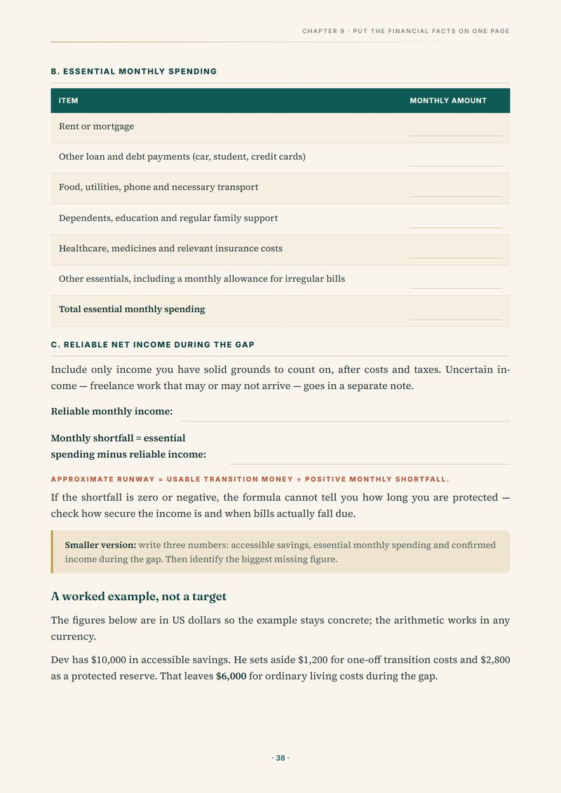
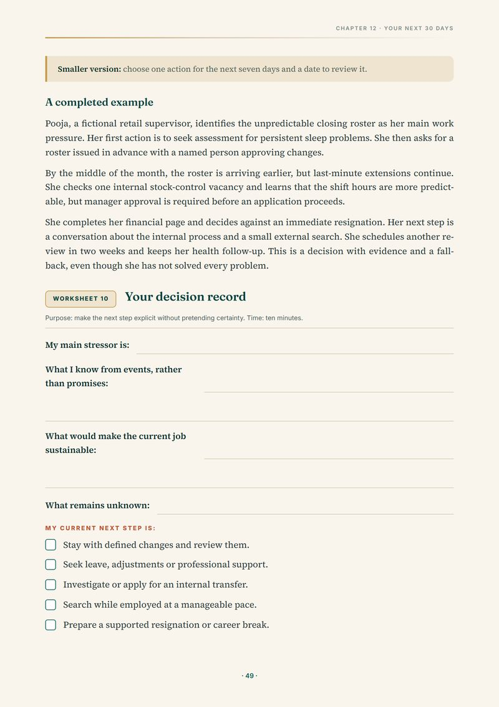
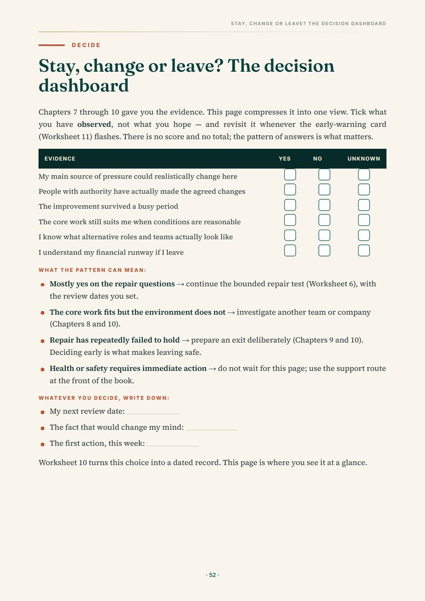
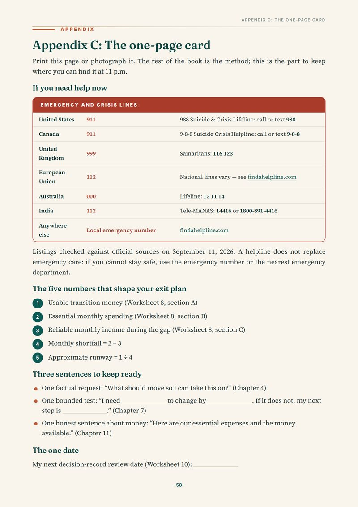

A 30-day action guide for the moment when “I can't keep working like this” is true — but quitting tonight may not be the answer. Worksheets, workplace scripts, financial tools and a decision framework — so your next move is chosen, not stumbled into.
11 worksheets · 11 workplace scripts · financial runway · Stay / Change / Leave dashboard
Instant 64-page PDF (A4) · read it on phone, tablet or desktop · print the worksheets when you want to write things out. See inside the guide →

If even two of these feel familiar, the situation deserves a structured look — before you make a high-stakes career and financial decision with the information you currently have.
Resignation emails get drafted late at night, by people who are exhausted, angry, scared — and missing the information a decision this size deserves. Leaving feels like the only action large enough to match how bad you feel. The feeling deserves attention. The email does not have to be sent tonight.
And “stay forever” is not the only alternative. Before You Resign exists for the space between those two: the weeks where you slow the decision down, reduce this week's pressure, and find out what the facts actually say.
You don't need a verdict. You need a method.
Most people considering resignation do not need another motivational speech. They need a way to separate a terrible week from an unsustainable job, understand the financial consequences before acting, and decide their next move with a clearer head. That is what this guide provides — its own opening page says exactly that.
The book is built so each part makes the next one possible — and so you can stop at any point and still have something useful.
Every page below is a real page from the guide. This is the part of the book you'll work in — the worksheets, scripts and dashboards that turn a 1 a.m. feeling into a decision you can defend. Or browse a 6-page preview (PDF) first →

Not every bad job is the same bad job. The map covers nine sources of pressure drawn from occupational-health guidance — work volume, lack of control, missing support, relationships, conflicting responsibilities, change, physical conditions, work fit, life outside work. You pick the two worth acting on first, attach a recent example to each, and name who can actually change it. “I hate my job” becomes: the manager changed the priority three times this week and moved no deadlines. That's a problem with an owner.

“I have too much work” is a feeling. The capacity page makes it arithmetic: scheduled hours, fixed meetings and breaks, realistic interruptions, time left for planned work — and the gap. Then you choose what changes: delay, delegate, reduce, or stop. A worked example shows exactly how it plays out: 40 scheduled hours, but only about 20 left for planned work once meetings, breaks and recurring requests are accounted for — against 26 hours of planned work. That's a six-hour gap, and a proposal a manager can answer with a yes, a no, or a counter-offer.

Some scripts include lower-risk alternatives for the days when a firm refusal could cost you something, and the chapter closes with a “before you send” checklist. For the lowest-energy moments, one factual sentence fits in any chat window: “What should move so I can take this on?”

“Things will improve” is not a plan; it's a promise with no expiry date. The repair agreement turns it into a bounded test: the required change, who can make it happen, the start date, what will show it happened, a review date — and, in writing, what you will do if the changes do not happen. You are not required to test an unsafe situation; the guide is explicit about that. But where repair is plausible, this is how you find out instead of waiting indefinitely.

The financial facts, on one page, in any currency: usable transition money, essential monthly spending, reliable income during the gap, monthly shortfall, approximate runway. Then the guide stress-tests your hopeful version and walks through cash timing, employer health coverage end dates, and repayment clauses to check before giving notice. Financial fear feeds on vagueness; this chapter feeds it facts — a full worked example included, clearly labelled a worked example, not a target.


The plan breaks the month into four windows — one main action each, from “address immediate needs” to “review options and money” — with what you'll have afterwards. The decision dashboard compresses everything into six evidence questions, ticked for what you've observed, not what you hope. Worksheet 10 turns the result into a dated record: your next step, your constraint, your fallback, your review date. Thirty days is a planning window, not a deadline for your entire career — the guide says that too.
One rule sits above every path — stay, change or leave: if health or safety requires immediate action, that comes first. The guide says so on page 5, not in a footnote.

Emergency and crisis lines for six regions, your five key financial numbers, three sentences to keep ready, and the one date that matters: your next review. Print it or photograph it — the rest of the book is the method; this is the part you reach for on a bad night.
That's not a mood. That's evidence. Some people finish this guide and stay — because the work genuinely changed. Some leave — because the evidence said so. Both are good outcomes. The bad outcome is another year of deciding at 1 a.m.
A note on professional care: this guide does not replace medical or mental-health care. If you need care, use it alongside appropriate professional support — not instead of it.
One-time payment. The complete guide — every chapter, worksheet and script — from page 1.
4.6 out of 5 · Based on 8 advance reader ratings
These readers received an advance PDF copy before the website launched. Reviews were edited for clarity with reader approval.
“I finished this over two evenings. Seeing my week laid out in the capacity worksheet helped me make sense of my workload. The Chapter 4 scripts were especially useful; I used one word-for-word with my manager.”
“As someone who has searched ‘should I resign’ late at night more times than I can count, I appreciated the calm approach. It never tells you what to do; it gives you worksheets to work through the decision yourself. The three-line note is printed and taped to my desk.”
“I read this before a planned conversation with my manager. The conversation card helped me walk in with facts instead of frustration.”
“The guide helped me look more clearly at my workload and what was draining my energy. The wording for setting boundaries around after-hours requests was useful in my team group chat.”
“Very practical, with no motivational fluff. The runway page helped me put my financial situation into numbers in rupees. I would have liked more examples outside private-sector jobs, but I found the process useful.”
“Straight to the point. The financial runway worksheet was eye-opening — it covers health insurance gaps and expenses I might otherwise have overlooked.”
“I bought this while sitting in my car, trying to get myself ready to walk into the office. I appreciated the practical approach: clear steps for thinking through what to do next, without generic motivational advice.”
“The guide helped me prepare for a conversation with my director about workload. Instead of only describing the problem, I brought a written breakdown of the work involved.”
“You do not have to solve your entire career tonight.”
But you can make tonight smaller — and give the next 30 days a method. Pressure map, scripts, repair test, runway, decision dashboard. One guide.
If you are in crisis or cannot stay safe, please skip all of this and contact your local emergency number, or find a helpline in your country at findahelpline.com. The career decision can wait. You matter more.